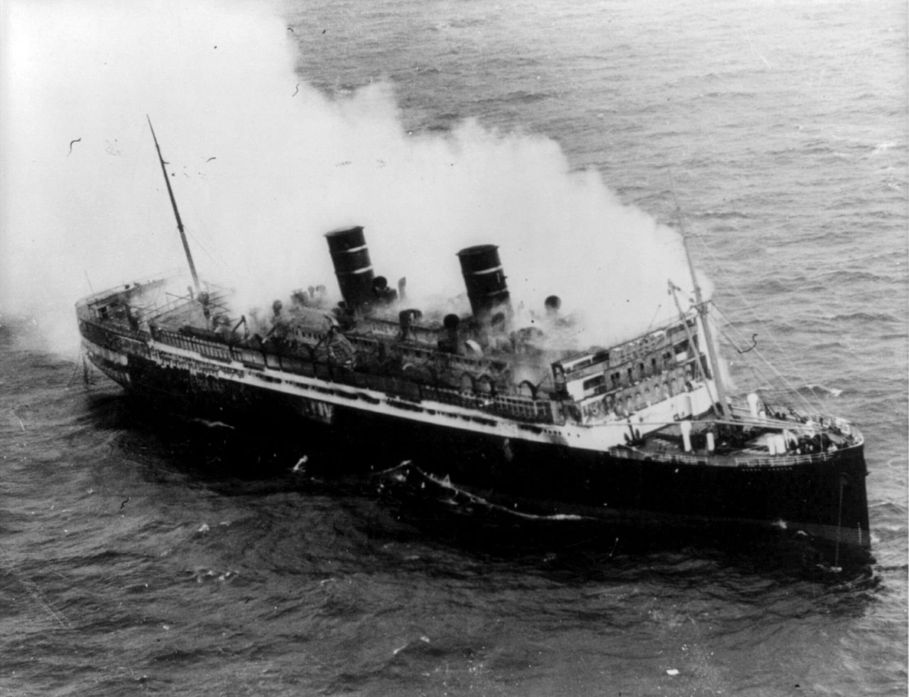

THE SINKING OF THE SS MORRO CASTLE
In September 1934, the luxury liner SS Morro Castle was completing a routine voyage from Havana, Cuba, to New York City. The ship was popular for its "booze cruises" during the tail end of Prohibition. However, the final hours of the voyage were plagued by strange occurrences. On the evening of September 7, the ship’s master, Captain Robert Willmott, complained of stomach pains after dinner and was found dead in his cabin shortly thereafter—officially of a heart attack, though rumors of poisoning by disgruntled crew members immediately surfaced. Command passed to Chief Officer William Warms as a violent nor'easter storm battered the ship.

The Midnight Inferno: Around 2:50 AM on September 8, while the ship was just off the coast of Long Beach Island, New Jersey, a fire was discovered in a storage locker in the First Class Writing Room. Fueled by the ship's highly flammable wood paneling and layers of fresh paint, the fire spread with terrifying speed. The new acting captain, Warms, made the critical error of maintaining speed and heading directly into the wind, which acted like a bellows, driving the flames and smoke back through the passenger quarters. The ship’s modern fire-suppression systems failed, and the crew—poorly trained and in a state of panic—failed to properly launch most of the lifeboats.
The Ghost Ship on the Beach: As the fire consumed the vessel, passengers were forced to jump into the churning, storm-tossed Atlantic. Because the ship was so close to shore, thousands of people on the New Jersey beaches watched in horror as the burning liner drifted through the dark. At dawn, the charred, skeletal remains of the Morro Castle drifted toward the shore and ran aground in the shallow waters of Asbury Park, directly in front of the city's Convention Hall. For months, the smoldering "Ghost Ship" remained on the beach, becoming a macabre tourist attraction while the town mourned the loss of 137 passengers and crew.
Key Facts
Date: September 8, 1934
Location: Off the coast of Asbury Park, New Jersey, United States
Casualties: 137 dead
Cause: A suspicious and rapidly spreading fire of undetermined origin (theories range from arson to electrical failure), exacerbated by the captain's sudden death and catastrophic errors in leadership and firefighting.
The Morro Castle disaster remains one of the most controversial and influential shipwrecks in American history. It exposed a staggering level of negligence, including a lack of fire drills, the use of flammable construction materials, and the suspicious conduct of the crew (specifically the radio operator, George White Rogers, who was later convicted of attempted murder in an unrelated case). The tragedy directly led to the creation of the U.S. Merchant Marine Academy and the implementation of strict international standards for fire-retardant materials, automatic fire doors, and mandatory shipboard fire drills that remain in place today.